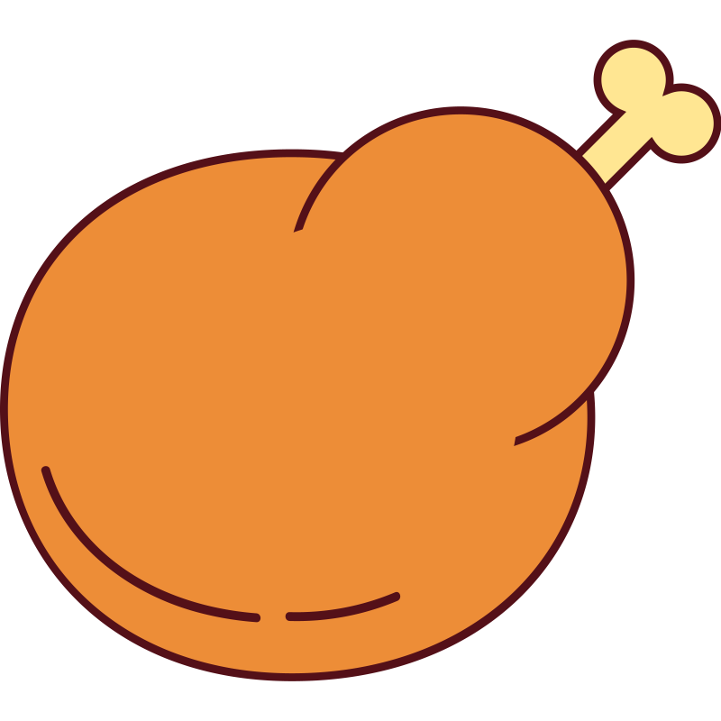

The Best Chicken

Recipe for The Best Chicken
Simply put, this is the best chicken you'll ever eat. Cooking time is ~ 15 minutes and cleap-up is minimal.
After one taste, you'll be begging for more.
Ingredients
- 1 Chicken Breast
- 1 Tbsp Butter
- 1 Tbsp Salt
- 1 Tbsp Pepper
- 1 metric ton of Peri-Peri Sauce
Steps
- Cut chicken breast in half to make thinner. Season with salt and pepper
- Melt your butter on a skillet over medium heat.
- Once the butter has melted, drop in your seasoned chicken breast.
- Wait until the bottom has cooked, then give her a flip. No spatula needed. Just a "flick a da wrist".
- Cook until complete.
- Remove chicken from skillet, top with some Peri-Peri sauce.
Bon Appetit.